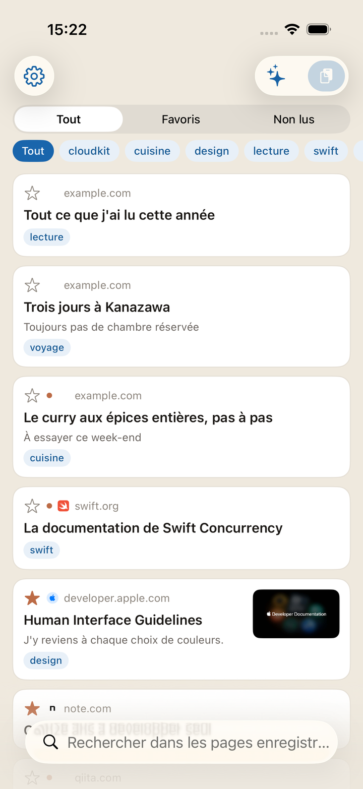
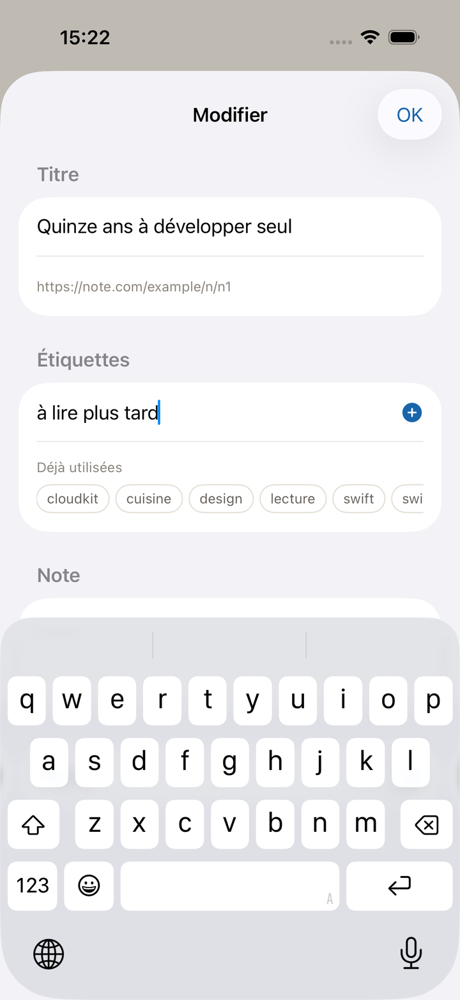
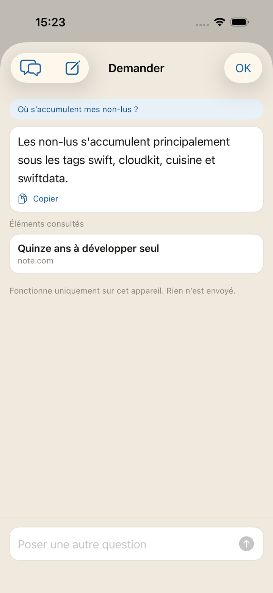
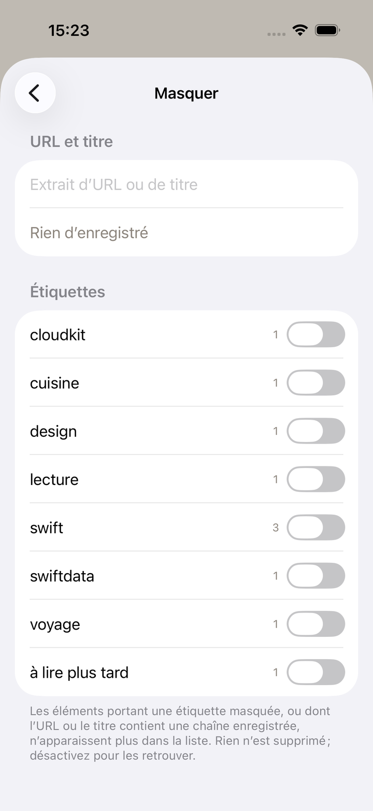
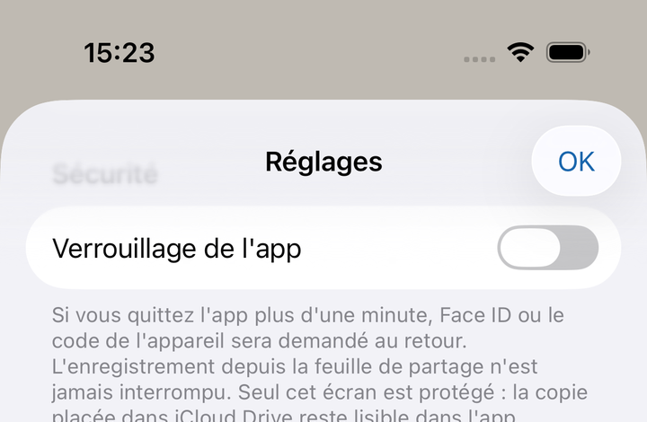

Une app de signets pour iPhone,
où l'on jette les pages à garder.
Plus tard, on les déterre grâce aux étiquettes et aux notes.
Sans compte Synchronisation iCloud Étiquettes et notes
Bientôt sur l'App Store

À l'instant où vous envoyez une page depuis la feuille de partage, elle est déjà enregistrée. Le titre et l'image, l'app va les chercher après. Une mauvaise réception n'empêche pas l'enregistrement lui-même.

Chercher d'un coup dans les titres, les URL, les étiquettes, les notes et le texte des pages. Filtrer par étiquette, séparer par Non lus et Favoris.
Les étiquettes et les notes sont les prises que vous laissez pour vous-même. Autant d'étiquettes que vous voulez, et celles déjà utilisées reviennent en suggestion.

Posez vos questions en langage courant, sur ce que vous avez amassé comme sur le fonctionnement de l'app. Les éléments consultés figurent sous la réponse et s'ouvrent d'un geste.
Maintenez le doigt sur un article et choisissez Résumé : il se fait à partir du seul texte de cette page — de quoi décider si vous lisez maintenant.
Tout se passe sur votre appareil. Rien n'est envoyé ailleurs. Réservé aux appareils compatibles avec Apple Intelligence.

Ce que vous préférez ne pas voir se masque en enregistrant une chaîne de son URL ou de son titre. Désactiver n'est pas supprimer.
Des étiquettes entières se masquent aussi. Dans les deux cas la règle demeure, et vous l'activez ou la désactivez.

Une URL enregistrée, c'est votre historique, tout simplement. Elle ne part jamais vers un serveur du développeur — ou plutôt : il n'y a pas de serveur. La synchronisation est laissée à iCloud, chez Apple.
Vous pouvez aussi la dissimuler sur place. Activez le verrouillage de l'app et l'ouverture demande Face ID / Touch ID, ou le code de l'appareil. Il est désactivé par défaut.
Le détail est dans la politique de confidentialité.
Cela apparaît sur les appareils connectés au même compte Apple. Aucune inscription à faire.
Une fois par semaine, tout est écrit en JSON dans iCloud Drive. La copie survit à la suppression de l'app.
Un widget affiche le nombre de non-lus. Tant que le verrouillage est actif, il n'affiche que ce nombre.
Enregistrer et chercher s'appellent depuis Raccourcis, et s'intègrent aux automatisations.
Il existe aussi une liste complète des fonctionnalités.
Enregistrer, trouver, ouvrir, ranger, masquer, garder une copie. Tous les gestes sont rassemblés sur la page du guide.
L'app porte le nom du geai des chênes — kakesu en japonais. L'oiseau cache des glands un à un, à des endroits différents, se souvient de quoi, où et quand, et vient les déterrer plus tard. C'est exactement ce que fait cette app : elle a donc gardé le nom de l'oiseau.
Les signalements de bugs et les demandes passent par la page de contact.
Bientôt sur l'App Store